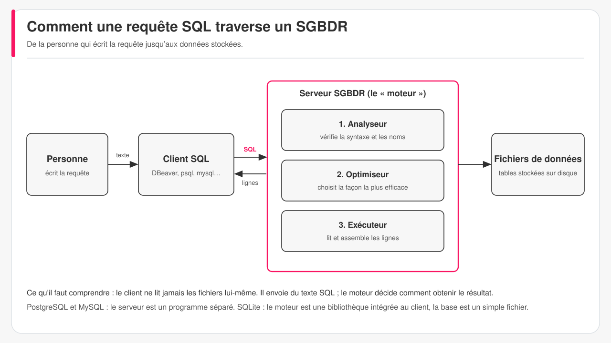
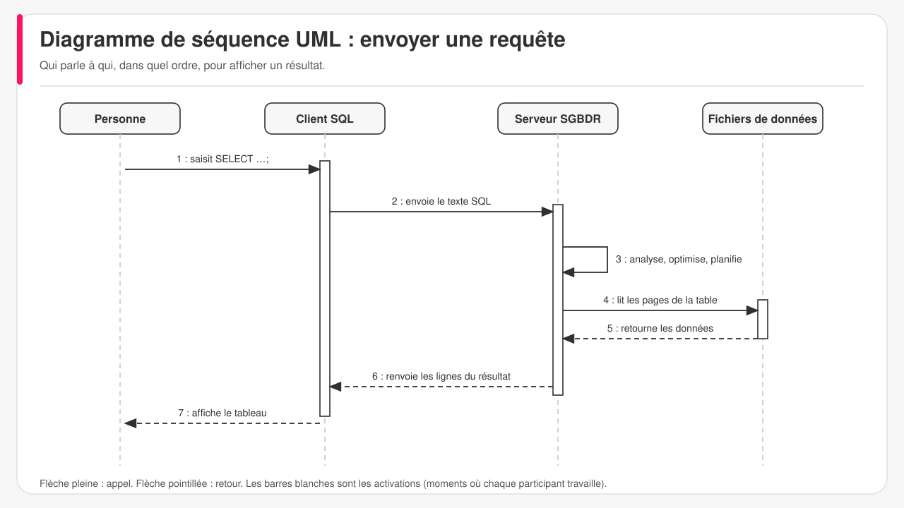

Ce que nous allons construire
Pendant tout ce cours, vous construisez une seule base de données : celle d’une librairie fictive qui vend des livres en ligne. Elle devra mémoriser ses clients, son catalogue de livres, les catégories de livres, les commandes, les lignes de commande (quels livres, en quelle quantité) et les paiements.
Pourquoi un projet unique ? Parce qu’un apprentissage est plus solide quand les exemples se répondent. Une requête écrite au chapitre 6 sera réutilisée au chapitre 9 ; une table créée au chapitre 4 servira jusqu’à l’examen blanc. Les noms techniques (tables, colonnes) sont en anglais, comme dans la plupart des entreprises ; toutes les explications sont en français.
Comprendre les mots : base, SGBDR, SQL
Une base de données est un ensemble organisé d’informations stockées pour être retrouvées et modifiées facilement. Une base de données relationnelle range ces informations dans des tables (comme des feuilles de tableur) reliées entre elles.
Un SGBDR (Système de Gestion de Bases de Données Relationnelles) est le logiciel qui gère ces tables : il stocke les données, vérifie qu’elles respectent les règles, et répond aux demandes. PostgreSQL, MySQL et SQLite sont trois SGBDR.
SQL (Structured Query Language) est le langage que l’on utilise pour parler à un SGBDR. Une requête est une demande écrite en SQL, par exemple « donne-moi les livres qui coûtent plus de 10 € ». Une instruction est n’importe quelle commande SQL, qu’elle lise ou modifie les données.
Le trajet d’une requête
Quatre acteurs interviennent chaque fois que vous exécutez du SQL :
- vous, qui écrivez la demande ;
- le client SQL, le programme dans lequel vous tapez (DBeaver,
psql,mysql,sqlite3…) ; - le serveur (le moteur du SGBDR), qui comprend la demande et la traite ;
- les fichiers de données sur le disque, où les tables sont réellement stockées.

Le schéma montre l’idée essentielle : le client ne lit jamais les fichiers lui-même. Il envoie du texte ; le moteur décide comment obtenir le résultat. C’est pour cela qu’on dit que SQL est un langage déclaratif : vous décrivez ce que vous voulez, pas comment le calculer.
Le diagramme de séquence UML ci-dessous détaille l’ordre des échanges.

PostgreSQL, MySQL et SQLite : trois moteurs, un même SQL
Le cours utilise PostgreSQL comme dialecte de référence, avec les variantes MySQL et SQLite chaque fois qu’elles diffèrent. Un dialecte est la façon propre à un moteur d’écrire certaines instructions : le cœur du langage est commun, les bords changent.
| PostgreSQL | MySQL | SQLite | |
|---|---|---|---|
| Fonctionnement | Serveur séparé | Serveur séparé | Bibliothèque intégrée à l’application |
| Où sont les données ? | Répertoire géré par le serveur | Répertoire géré par le serveur | Un seul fichier (par exemple bookstore.db) |
| Comptes utilisateurs SQL | Oui (rôles) | Oui | Non : pas de CREATE USER |
| Installation | Plus longue | Plus longue | Quasi immédiate |
| Idéal pour | Applications professionnelles | Applications web | Apprendre, prototyper, applications locales |
Versions de référence du cours : PostgreSQL 16 ou plus, MySQL 8.4 LTS (avec les réserves indiquées dans la page « Sources »), SQLite 3.39 ou plus. Les scripts ont été exécutés pour de vrai sur PostgreSQL 16.15, MySQL 8.0.46 et SQLite 3.45.1.
Installer les outils
Les commandes ci-dessous sont des repères ; les procédures évoluent, vérifiez toujours la page officielle de téléchargement de chaque moteur.
PostgreSQL
# Linux (Debian/Ubuntu)
sudo apt install postgresql
# macOS (Homebrew)
brew install postgresql@16
# Windows : installateur officiel sur postgresql.org/download
MySQL
# Linux (Debian/Ubuntu)
sudo apt install mysql-server
# macOS (Homebrew)
brew install mysql
# Windows : « MySQL Installer » sur dev.mysql.com/downloads
SQLite
# Linux (Debian/Ubuntu)
sudo apt install sqlite3
# macOS : sqlite3 est généralement déjà présent
# Windows : archive « sqlite-tools » sur sqlite.org/download.html
Pour un client graphique adapté aux débutants, installez DBeaver Community (gratuit, dbeaver.io). Il se connecte aux trois moteurs. Au premier lancement d’une connexion, DBeaver propose de télécharger le pilote (le petit programme qui sait parler à ce moteur) : une connexion Internet est alors nécessaire une seule fois.
Ouvrir une connexion
Se connecter, c’est dire au client où se trouve le moteur et qui vous êtes. Il faut en général : un hôte (localhost = votre propre machine), un port (5432 pour PostgreSQL, 3306 pour MySQL), un nom de base, un utilisateur et un mot de passe. Avec SQLite, il suffit d’indiquer le chemin du fichier de base.
PostgreSQL
psql -h localhost -U bookstore_user -d bookstore
MySQL
mysql -h localhost -u bookstore_user -p bookstore
SQLite
sqlite3 bookstore.db
Les bases, utilisateurs et scripts d’initialisation sont préparés au chapitre 3 et dans le dossier sql/.
Votre première instruction SQL
Une fois connecté, tapez cette requête. Elle n’utilise aucune table : le moteur calcule simplement un résultat. AS result donne un nom (un alias) à la colonne affichée.
SELECT 1 + 1 AS result;
Résultat attendu sur le jeu de données de référence (obtenu en exécutant la requête lors de la génération du cours).
| result |
|---|
| 2 |
Le point-virgule ; termine l’instruction. Le résultat est un tableau d’une colonne et d’une ligne : le moteur a évalué 1 + 1. Cette même ligne fonctionne à l’identique sur les trois moteurs.
Pour afficher la version du moteur, en revanche, la commande change :
PostgreSQL
SELECT version();
MySQL
SELECT version();
SQLite
SELECT sqlite_version();
Comprendre les erreurs de connexion courantes
| Message (extrait) | Cause probable | Que faire ? |
|---|---|---|
| connection refused / Can’t connect to server | Le serveur n’est pas démarré, ou le port est faux | Démarrer le service ; vérifier le port |
| password authentication failed / Access denied | Mot de passe ou nom d’utilisateur incorrect | Retaper avec soin ; vérifier l’utilisateur créé |
| database "x" does not exist / Unknown database | La base n’a pas été créée ou le nom est faux | Créer la base (chapitre 3) ; corriger le nom |
| no such table avec SQLite | Vous avez ouvert un autre fichier (ou un fichier neuf, vide) | Vérifier le chemin et le répertoire courant |
Exercice guidé : prédire avant d’exécuter
Sans exécuter, prédisez le résultat de SELECT 10 / 4 AS ratio; sur PostgreSQL et sur MySQL, puis expliquez pourquoi les deux moteurs peuvent donner des résultats différents.
Afficher la correction détaillée
Sur PostgreSQL, 10 / 4 vaut 2 : entre deux entiers, / fait une division entière. Sur MySQL, le résultat est 2.5000 : / donne un résultat décimal. Pour obtenir un résultat identique, forcez un décimal : 10 / 4.0. SQLite se comporte comme PostgreSQL (division entière).
Retenez : un même symbole peut avoir un sens légèrement différent selon le moteur. Ce type de différence sera signalé chaque fois qu’il compte.
Exercice autonome : première requête
Écrivez une requête qui affiche une seule colonne nommée message contenant le texte Bonjour, librairie.
Afficher la correction détaillée
SELECT 'Bonjour, librairie' AS message;
Résultat attendu sur le jeu de données de référence (obtenu en exécutant la requête lors de la génération du cours).
| message |
|---|
| Bonjour, librairie |
Le texte est entre apostrophes simples '…'. Les guillemets doubles "…" servent, selon les moteurs, à désigner des noms de colonnes ou de tables : une erreur fréquente chez les débutants est de les utiliser pour du texte.
Valider · question 1
Voir la justification de chaque réponse
- Incorrect — Le client SQL (DBeaver) : Il envoie le texte de la requête et affiche le résultat, mais ne lit pas les fichiers.
- Bonne réponse — Le moteur du SGBDR : C’est lui qui analyse, optimise puis exécute la requête sur les fichiers de données.
- Incorrect — Le navigateur web : Il n’intervient pas dans l’exécution d’une requête SQL.
Valider · question 2
Voir la justification de chaque réponse
- Incorrect — On crée ses utilisateurs avec CREATE USER : SQLite n’a pas de gestion native de comptes SQL ; cette instruction n’existe pas.
- Bonne réponse — La base est stockée dans un seul fichier et le moteur est intégré à l’application : C’est ce qui rend SQLite très simple à installer.
- Incorrect — Il faut démarrer un serveur avant de s’y connecter : Il n’y a pas de serveur séparé avec SQLite.